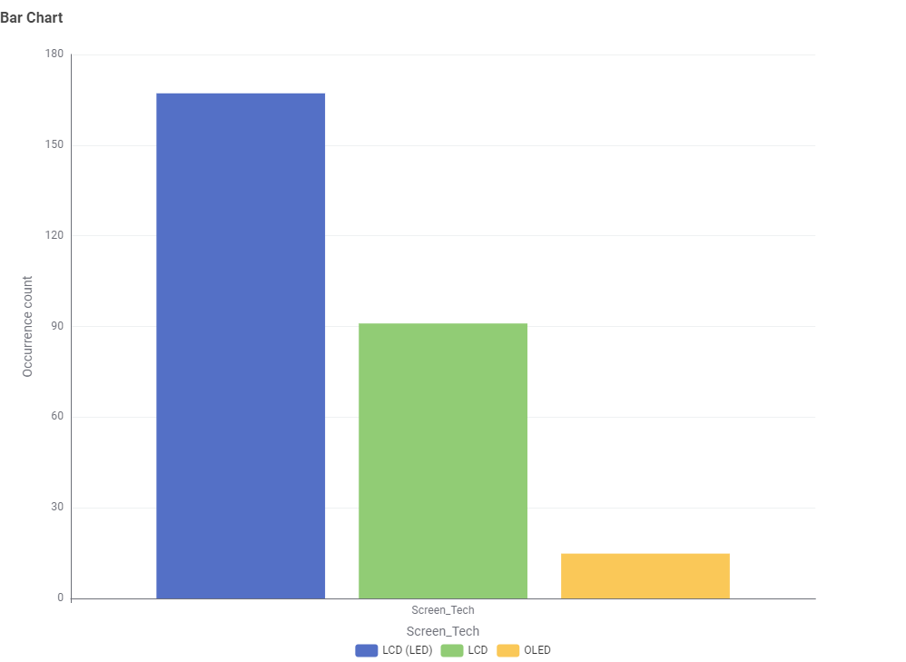
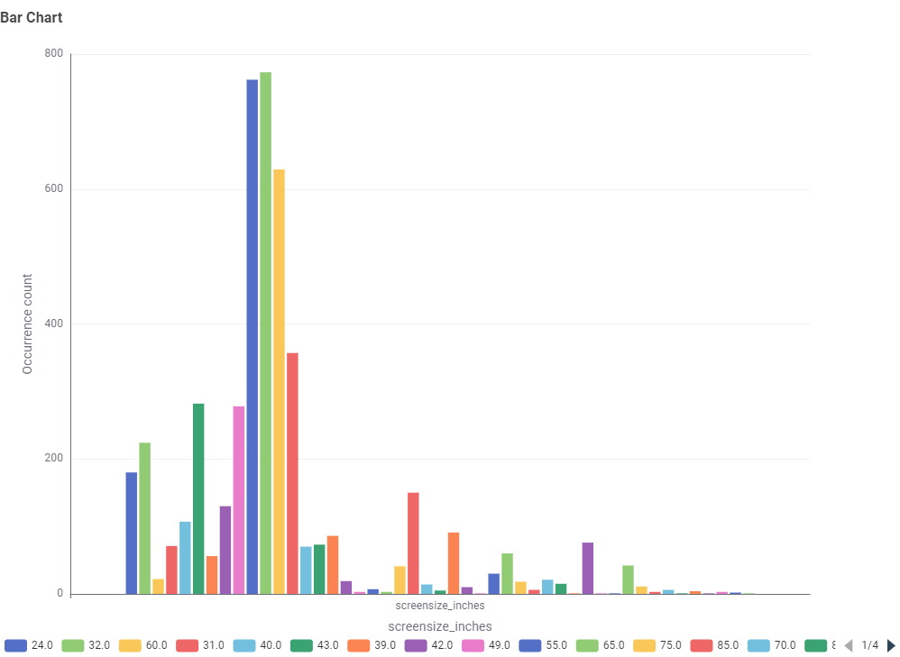
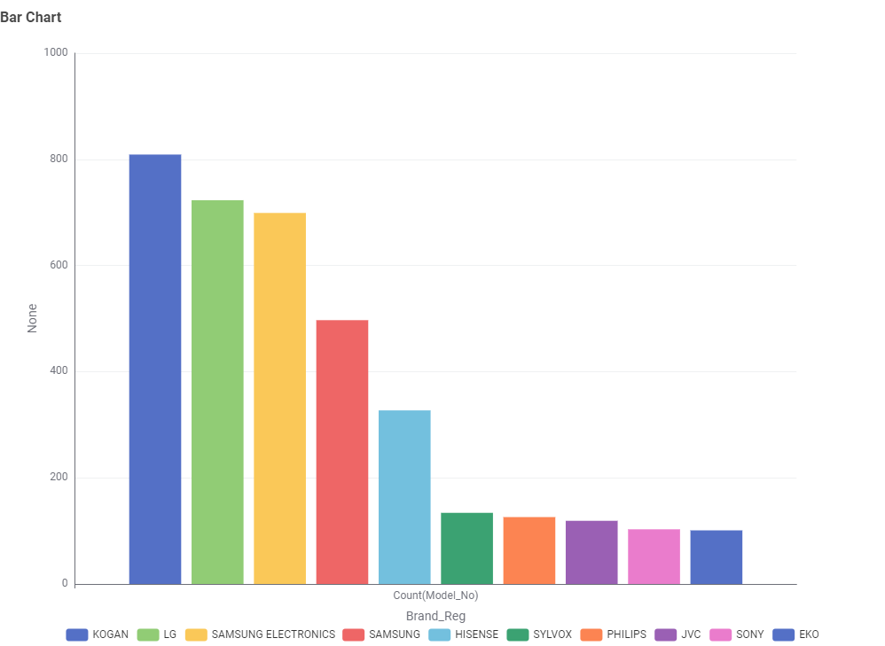
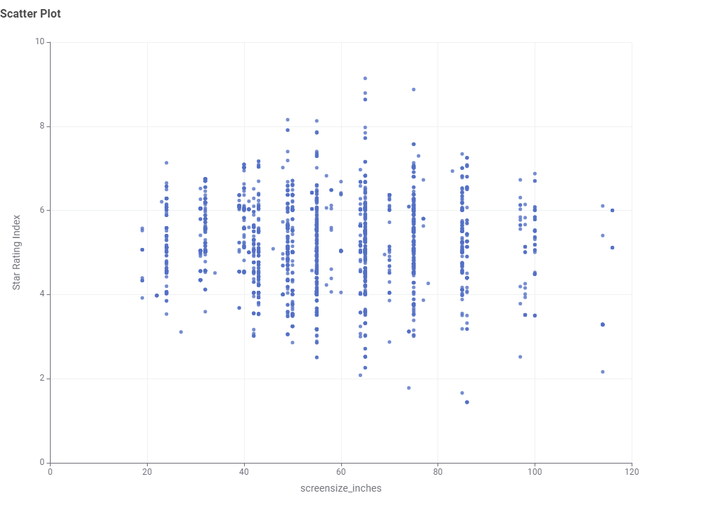
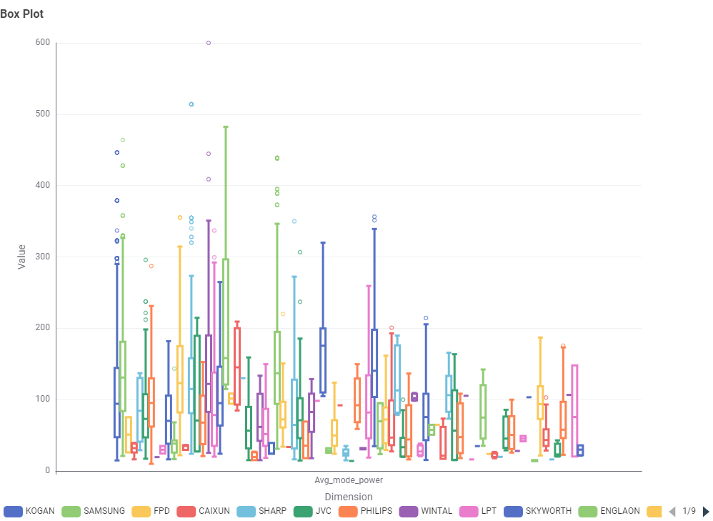
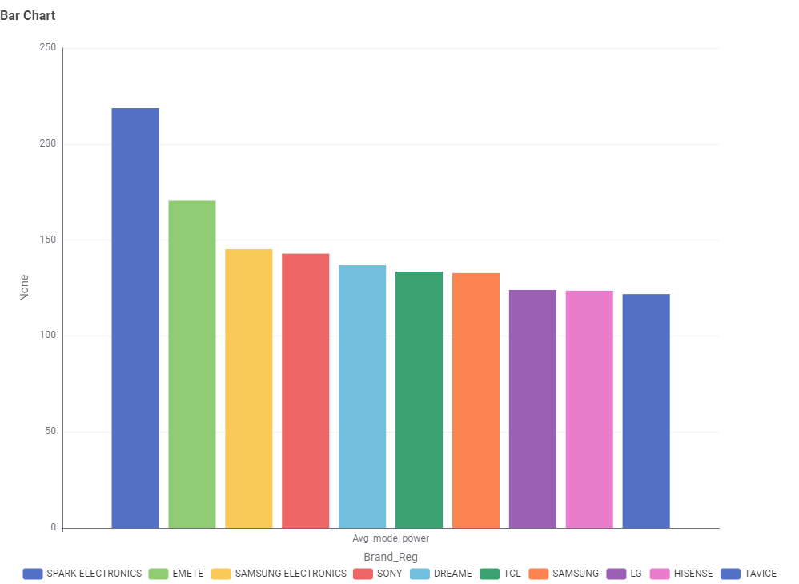

Televisions
Screen size and usage pattern are the two biggest factors in a television's yearly energy draw.
Why This Matters to You
Buying a new TV can be confusing when you're trying to balance size, brand, and energy efficiency. This page uses real data from Australian TV listings to help you understand what's actually available on the market, and which choices will save you money on power bills in the long run.
Data Analysis (KNIME)
The charts below were generated in KNIME after cleaning and processing the raw Australian TV energy dataset.
1. What TV screen technologies are currently available in Australia, and which are the most frequent?


LCD (LED) is the most common screen technology, followed by LCD at a medium level, while OLED has the lowest occurrence.
2. What screen sizes are available, and which are the most frequent?

65-inch is the most common screen size with 773 units, followed closely by 55-inch at 762 units, while 42-inch is the least common at 130 units.
3. Which brands have the largest number of models?

KOGAN is the most purchased brand with 809 models, followed by LG at 723 and Samsung at 699, while EKO has the fewest at 101.
4. Which screen technology consumes the least amount of power?

OLED has the highest average power consumption at 112.7W, LCD is medium at 106W, while LED has the lowest at 71.3W.
5. What is the relationship between screen size and power use?

Most TVs cluster around 60–80 inches in screen size with power consumption ranging between 50–200W, showing that larger screens tend to use more power.
6. What is the relationship between star rating and screen size?

Most TVs fall between 40–90 inches in screen size with star ratings ranging from 2 to 8, showing no strong or clear relationship between screen size and star rating.
7. Are there differences in power consumption between brands?


8. What is the relationship between star rating and power use?

Key Takeaway
When choosing a TV, consider size, brand, and screen technology together. A 55–65 inch LED TV from a trusted brand like KOGAN or LG offers a good balance of energy efficiency, availability, and value for everyday buyers.